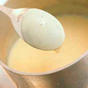
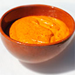

(current)
Talleres
Octubre
Noviembre
Diciembre
×
¡Aviso!
Estas recetas todavía no están disponibles.
Recetas Base
Comprar Productos
Contacto
Coolinary Master Classe's Recetas Base

Crema Inglesa
Caldo de Ave

Salsa Romesco
Crema Inglesa
Ingredientes
Leche
250 ml..
Yemas de Huevo
2 un.
Azucar
75 gr.
Elaboración
Espuma de Patata
Cocer las patatas (tipo Monnalisa), cubiertas con agua mineral a ras sin sal. Escurrir reservando el agua de cocción.
Mezclar con el resto de ingredientes, el agua de cocción, el aceite de oliva, la sal (al gusto) y la nata.
Triturar con thermomix la crema de patata obtenida debe ser muy fina y no tener grumos para que salga bien por el sifón.
Introducir en el sifón, colocar dos cargas y agitar.
Para el servicio mantener en Roner a 50° como máximo.
Consejos
Procurar no superar la temperatura indicada ya que si se supera se corre el riego de que las yemas se cuezan y la crema se corte.
La leche se puede aromatizar al gusto (Canela, Vainilla, Cítricos, etc.).
Debido a la cocción simplemente pasteurizada tiene una caducidad corta. Conservación máxima 4 días.